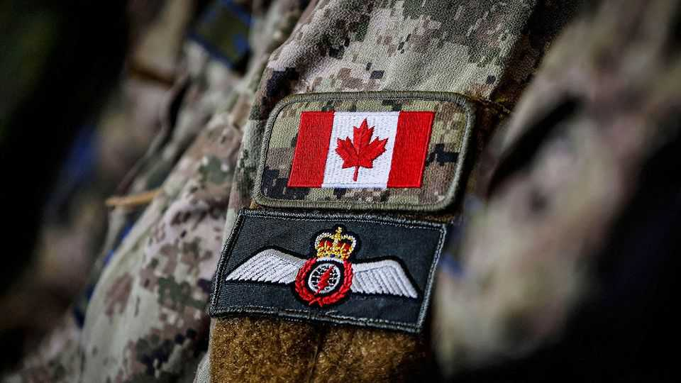

Canada turns to Europe for its security
Donald Trump’s capriciousness has pushed Canada’s military spending towards Europe

Jul 30th 2026
AFTER DECADES as one of NATO’s worst laggards on military spending, Canada is changing fast. On July 8th, at the alliance’s summit in Ankara, Mark Carney, the prime minister, repeated his pledge that Canada’s defence budget would rise from a measly 1.5% of GDP in 2024 to 4% within the next two years. Recent polling suggests that more than 80% of Canadians support much higher spending on defence.
Two days before his pledge, Mr Carney had announced that Thyssenkrup Marine Systems (TKMS), a German defence firm, had won a contest to be preferred bidder to supply the Royal Canadian Navy with up to 12 advanced diesel-electric submarines. The first four are to be delivered by 2034. That is by far the biggest defence deal in Canadian history, with a purchase cost of C$24bn ($17bn) rising to more than C$100bn once ongoing costs like maintainance are factored in. These plans are evidence of the Carney government’s determination to snuggle closer to Europe at a time when the United States, historically and geographically Canada’s closest ally, has become an unreliable and at times downright hostile neighbour.
The procurement decision happened very quickly. Canada began thinking about replacing its four ancient, chronically unreliable Victoria-class submarines five years ago, but little progress was made. However, seven months after taking office in March last year, Mr Carney set up a new body, the Defence Investment Agency, to simplify and accelerate a sclerotic military-procurement system.
The contest to build the subs was reduced from five to two bidders: Hanwha Ocean from South Korea and TKMS. Within four months of the bids coming in, the choice was made. David Perry of the Canadian Global Affairs Institute, an Ottawa-based think-tank, says: “The new agency demonstrates Carney’s sense of urgency.”
Both the Hanwha and TKMS subs possessed sufficient range and endurance. The Korean vessel is equipped with a vertical-launch system from which land-attack missiles can be fired, while the German craft is probably the stealthier of the two, thanks to its unique diamond-shaped hull design and other advanced technologies. Youri Cormier, a defence expert at Ottawa University, reckons the absence of a land-attack capability suggests that the boats will play a defensive role, protecting both the Arctic and sea-lanes used by allies from Russian and Chinese aggression. “You can’t have the world’s longest coastline without a strong sub fleet,” he says.
But it was the geopolitical priority of closer ties with Europe that tipped the contest in TKMS’s favour. Mr Cormier says that with seven NATO countries either operating or expecting to operate TKMS submarines “the interoperability and the availability of spares will be fantastic”. He adds that over the life of the contract, spanning many years, working with Europeans rather than Koreans will be easier from a linguistic and cultural point of view.
Two other factors sealed the deal, says Gaëlle Rivard Piché of the CDA Institute, another think-tank in Ottawa. The first was the offer by Norway to give up slots in the production line so Canada could deploy boats by 2034. The second was the guarantee by TKMS to match 100% of the value of the contract through both military and civil investments in Canada.
On the face of it, the deal should not worsen relations with the United States, as its shipyards make nuclear-powered submarines, not diesel-electric ones. Moreover, analysts say that the new boats’ intelligence-gathering skills will make Canada a much more valuable member of Five Eyes, the alliance of English-speaking intelligence agencies.
Mr Perry says this makes the TKMS deal a perfect opportunity for Canada to build up its security relationship with Germany, which will become its second-biggest core defence supplier after the United States. He believes the project will end up costing much more than C$100bn: “Tripling the size of the submarine fleet means tripling the size of the infrastructure and the number of workers needed to support it.” In just the first five years of the programme around 50,000 new jobs should be created.
However, the Trump administration may be less happy about some of Mr Carney’s other efforts to develop stronger military ties with Europe. In February Canada became the first, and so far only, non-European country to join the EU’s €150bn SAFE financial scheme, which provides long-term, low-interest loans to improve military heft. It will allow Canadian firms to fulfil 80% of the value of approved procurement contracts. Ms Rivard Piché says that in the past Canada has spent 70% of its equipment budget on American kit. Joining SAFE is “a quick win” that will help reduce that dependency.
In June 2025, Mr Carney’s government also signed the EU-Canada Security and Defence Partnership, which is intended to create a comprehensive framework for strategic co-operation. The EU’s foreign-affairs chief, Kaja Kallas, describing Canada as “a trusted friend”, said that “at a time of rising tensions, it will deepen our defence ties and unlock new co-operation.”
In another Europe-focused initiative, Mr Carney is leading the effort to set up a “NATO bank”—the Defence Security and Resilience Bank. Its purpose is to bolster the defence of allied nations by raising up to $135bn in cheap loans. So far eight countries have joined alongside Canada, but it must get the support of Britain, France and Germany, Europe’s heavyweight military powers, if it is to gain the financial and geopolitical firepower it needs.
Canada is also reportedly contemplating scaling back the number of F-35 fighters it buys from Lockheed, an American firm. It is considering supplementing these with the Gripen, made by Sweden’s Saab, despite that jet being less capable than the F-35 and not being compliant with Norad, the bi-national warning-and-control command that it jointly operates with the United States. However, it is possible that Gripen might make the plane in Canada. With trust between the Norad partners at a low ebb, that is a benefit.
Saab has proposed a full technology transfer, including access to the source code of the Gripen’s mission systems, giving Canada full control of all data generated by the aeroplanes, and independent upgrade and maintenance rights. By contrast, though some components of Canadian F-35s are made in Canada, the source code is closely guarded by the United States.
If Canada increasingly sees Europe as its key security and military procurement partner, Donald Trump has only himself to blame. His threats to Canada’s sovereignty, his punitive tariffs and his wavering commitment to the defence of NATO allies has inevitably pushed Canada into the arms of a welcoming Europe. ■